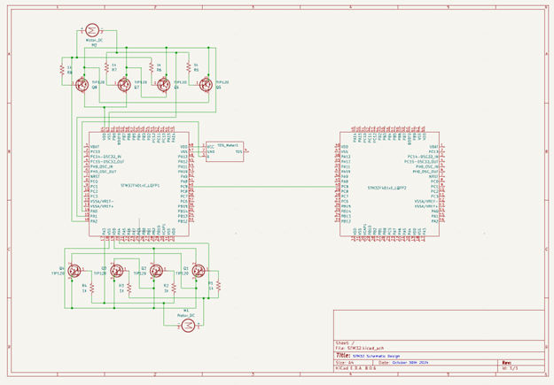
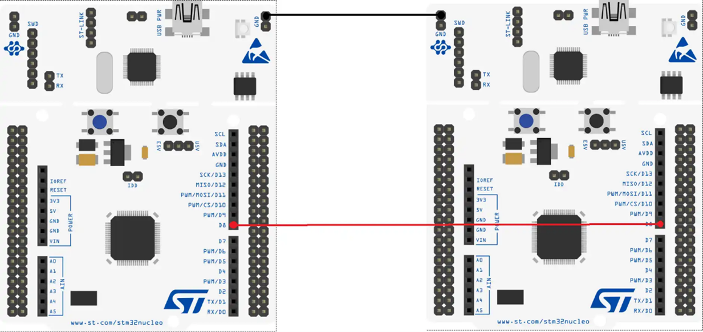
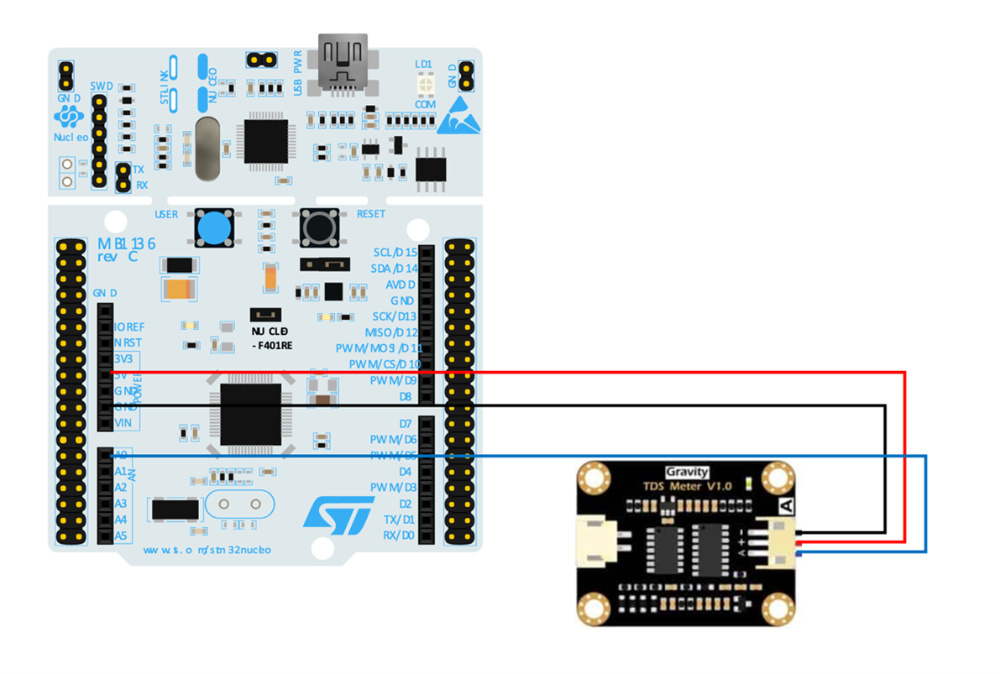
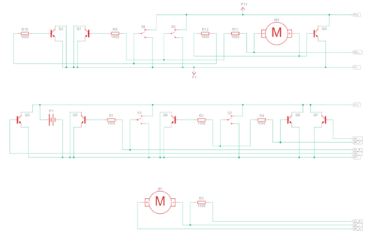

🌊 Automatic Water Quality Monitoring Device
📌 Overview
Our team developed a low-cost, remotely operated Automatic Water Quality Monitoring Boat designed to assess real-time water conditions. This solution addresses growing concerns over water quality, particularly in the Waterloo region. The boat collects Total Dissolved Solids (TDS) data using onboard sensors, transmits readings through STM32 microcontrollers, and can be upgraded for Bluetooth communication and full autonomy.

🧠 Motivation
Local residents have raised concerns about turbid and potentially unsafe tap water. However, traditional monitoring approaches are costly, time-consuming, and sometimes unsafe. Our goal was to create an affordable, efficient, and scalable solution that enables government agencies, businesses, and individuals to monitor water quality effortlessly.
🛠️ Features & Capabilities
- TDS Measurement: Measures water purity (0–500 ppm) with high accuracy.
- Autonomous Navigation: Dual DC motors controlled via STM32 and H-bridge circuitry.
- Remote Control: Bluetooth-compatible (optional HC-05 module).
- Waterproof Design: Operates in rain, high humidity (IP68), and temperatures from -10°C to 50°C.
- Modular Design: Built for ease of maintenance, upgradeability, and portability.
- Sustainable Power Use: Efficient energy management with low-power microcontroller modes.

🔍 Technical Highlights
- Core Components:
- STM32F401RE Microcontrollers
- TDS Sensor Module
- Dual underwater motors
- TIP120-based H-Bridge (with upgrade option to L293D IC)
- 3D-Printed Boat Shell: Custom-designed for buoyancy and electronics housing.
- PCB Design: Proposed as an enhancement to reduce wiring clutter and debugging complexity.
- Data Communication: Wired by default; Bluetooth integration in development
- Testing & Validation: Passed tests for sensor accuracy, propulsion, transmission integrity, power endurance, and environmental safety.



💡 Innovation
- Replaces traditional manual sampling methods with a smart, mobile platform.
- Provides near real-time water quality feedback.
- Designed with upgradability in mind: from PCB integration to solar-powered charging and AI-based navigation.
🧪 Project Impact
- Offers a practical solution for monitoring urban and natural water bodies.
- Supports environmental protection efforts by enabling accessible data collection.
- Scalable for municipal and individual deployment.
👥 Team
- Zhuoyan Zhang
- Bill Lu
- Leo Gao
- (Course: ECE 198, Instructor: David Lau, TA: Shadi Vandvajdi)